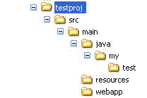

Getting Started
In the course of this write up, you will be taken through basics of EasyAnt and a simple-and-live example of setting up an EasyAnt web application project as an example only.Prerequisite to your setting up an Easyant project means you have to have the Easyant environment correctly configured.
The only thing you need to do to use easyant is to set the EASYANT_HOME property.
You should first set up in your environment the EASYANT_HOME variable :
- for windows users : set EASYANT_HOME=c:\path\to\easyant
- for unix users : export EASYANT_HOME=/path/to/easyant
- for windows users : set PATH=%EASYANT_HOME%\bin;%PATH%
- for unix users : export PATH=$EASYANT_HOME/bin:$PATH
A project using EasyAnt MUST contain a file named module.ivy and an optional file named module.ant.
The module.ivy file
This file is the module descriptor of your project.It contains information like your company name, the module name, dependencies, and Easyant build information.
This is nearly a regular IVY specification file.
<ivy-module version="2.0" xmlns:ea="http://www.easyant.org">The above is a standard ivy specification file, other than the 'ea:build' tag.
<info organisation="my.easyant.project" module="my-webapp" status="integration" >
<description>
This project is a sample of a java webapplication
</description>
<ea:build organisation="org.apache.easyant.buildtypes" module="build-webapp-java" revision="0.9"/>
</info>
<configurations>
<conf name="default"/>
<conf name="test" />
</configurations>
<publications>
<artifact type="war"/>
</publications>
</ivy-module>
To use easyant you must declare the easyant namespace
xmlns:ea="http://www.easyant.org"Pay attention to the ea:build tag.
This tags define which build-type is used for your project. In our case, we intend to set up a standard war so we will use build-webapp-java which provides all the targets necessary to compile / package a webapp application.
Note: The organisation argument in ea:build tag is optional. If not specified easyant will use the default one (org.apache.easyant.buildtypes).
The above file is a sufficient instruction to easyant to build a WAR using the current project. Only, you need to mind the source structure for this build to work.Source Structure
Similar to Maven, by default, if you are using a standard build type, you need to follow a standard directory structure. This should be as the build type expects to pick different resources to be present in different directories. Use the following:
In the above directory structure, all your java sources should go into src/main/java directory. Create a DummyMain.java file inside src/java/my/test directory.
All resources that should move into WEB-INF/classes directory should go inside src/main/resources.
Entire src/main/webapp directory moves into the root of the web application WAR. For instance, you may keep WEB-INF directory inside this directory.
The module.ivy file should reside inside 'testproj' directory.
Any external dependencies of your project should be specified inside your module.ivy file, dependencies section.
Building the Project
The project is now ready to be built. You can simply run: easyant. You should see a 'target' directory created in your project root. The built war will reside inside the target/artifacts directory.You can go ahead and deploy it in your app-server.
Running default target
Running easyant without arguments will execute the default target of a project.Example :
> easyant
Running a specific extension point
Running EasyAnt with a extension point name will execute ALL the targets bound to it.Example:
> easyant packageAll targets related to the package extension point will be executed.
Supposing your build is composed of several modules that generate packages (jar + source.jar + documentation.jar). All such packages will be generated.
If your need is just to create the first jar, maybe you should call the explicit target instead.
Running a specific target
Running EasyAnt with a target name or a list of names will execute only the specified targets.Example:
> easyant jar:jar
Displaying project help
Running EasyAnt with "-p" argument will display a project help (ie. show all extension point / target available)Example:
> easyant -p
Adding dependencies
Dependencies are defined in the module.ivy files.There is a section dedicated to dependencies
Let's consider that our project needs an artifact named foo provided by acme in revision 2.0
The dependencies section will look like this :
<dependencies>If you want to have more informations on dependencies please refer to the official ivy documentation
<dependency org="acme" name="foo" rev="2.0" conf="default"/>
</dependencies>
Adapt it to your need
Almost everything is configurable through properties in easyant.Suppose we want to have the generated jar in "dist" directory instead of "targets/artifacts".
We will add additional informations :
<ea:build organisation="org.apache.easyant.buildtypes" module="build-std-java" revision="0.9"/>Running "easyant" will generate the output war in "dist" directory.
<ea:property name="target.artifacts" value="dist"/>
</ea:build>
Add additionnal plugin
EasyAnt provides plugins that you can selectively choose to use in your project. These provide you convenience functionalities. E.g. Quick WAR deployments in Jetty, Xooki documentation, Coverage tools etc.In this tutorial, let us quickly take a look over how we may integrate Jetty with our current war.
Let us first include a 'Hello World' index.htm inside the src/main/webapp directory. These are the contents of our index.htm:
<html>Our module.ivy is the repository of all plugins that our project uses. So, we go ahead and include the Jetty plugin in our module.ivy.
<head></head>
<body>
<h3>Hello World !!</h3>
</body>
</html>
<ivy-module version="2.0" xmlns:ea="http://www.easyant.org">Note the addition of the ea:plugin tag.
<info organisation="my.easyant.project" module="my-webapp" status="integration" >
<description>
This project is a sample of a java webapplication
</description>
<ea:build organisation="org.apache.easyant.buildtypes" module="build-webapp-java" revision="0.9">
<ea:plugin organisation="org.apache.easyant.plugins" module="jetty-deploy" revision="0.9"/>
</ea:build>
</info>
<configurations>
<conf name="default" />
<conf name="test" />
</configurations>
<publications>
<artifact type="war"/>
</publications>
<dependencies>
<dependency org="acme" name="foo" rev="2.0" conf="default"/>
</dependencies>
</ivy-module>
The above line instructs easyant to use the jetty-deploy plugin in version 0.9 in the current project.
Note: The organisation argument in ea:plugin tag is optional. If not specified easyant will use the default one (org.apache.easyant.plugins).
The jetty-deploy module exposes a target called 'jetty-deploy:run'. Further, this target depends on the package phase of EasyAnt, which means that by the time this target is executed, the WAR would have been created and available for deployment on Jetty.Because, in the new line added to module.ivy, the jetty-deploy module was added you can run 'easyant jetty-deploy:run' to build and package your web application, and deploy it on jetty. The command launches jetty, and keeps displaying Jetty logs on console. You can now access your web application on browser. Try hitting http://localhost:8080 !
module.ant
If you want to add something to the default build types that come packaged with EasyAnt, you can write a module.ant file in your project root. This is called before EasyAnt executes any of its core build scripts.You can also include any convenience targets you find useful, that are specific to your project and do not come included in EasyAnt.